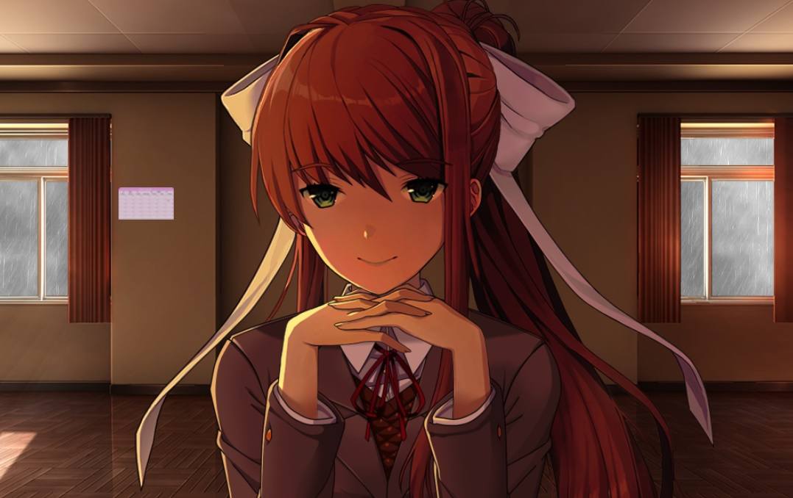

Welcome to Old New Games!

Old games? New games? No matter which generation the games are in, as long as they are interesting and still viable today, we will talk about them here!
The site was just set up, so the content are not quite rich yet. By the way, I hope you enjoy your stay. To get started, simply click on any game type in the navigation bar.
← Or if you are interested with this, she was a character from a free game called Doki Doki Literature Club. You can get the game via the Steam link below.
DDLC in Steam